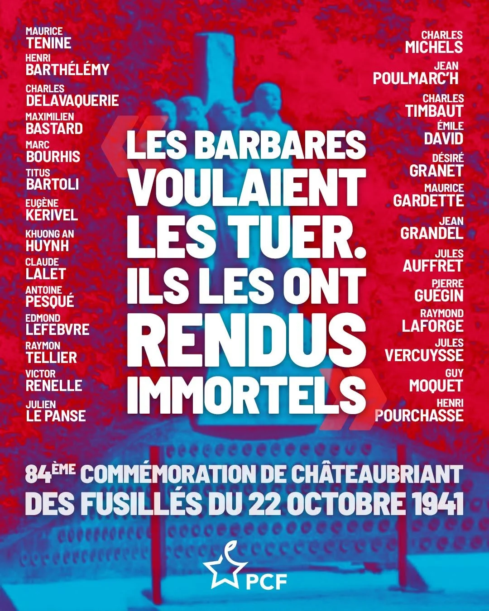

Annonce du PCF national
L’annonce de la commémoration des 27 fusillés de Châteaubriant
Date de mise à jour indiquée par Facebook · 15 octobre 2025
Repères éditoriaux
Le PCF avait annoncé la commémoration des 27 fusillés de Châteaubriant le dimanche 19 octobre 2025. Il appelait à transmettre la mémoire de ces résistants et de leur engagement.
Texte de la publication · PCF national
Le 22 octobre 1941, 27 militants communistes et syndicalistes CGT ont été fusillés par les nazis en représailles à l’action de jeunes résistants. Le choix des otages avait été laissé à la discrétion du gouvernement de Vichy : sur la liste de 100 détenus présentée par les Allemands au ministre de l’Intérieur Pierre Pucheu, 50 noms furent retenus, essentiellement des communistes.
La commémoration aura lieu dimanche 19 octobre à 14 h, à la Sablière de Châteaubriant, en présence de Stéphane Peu, député et président du groupe GDR, et de nombreux militants et élus du PCF.
« Vous qui restez, soyez dignes de nous les 27 qui vont mourir. » – Guy Môquet, militant communiste fusillé par les nazis le 22 octobre 1941 à l’âge de 17 ans.

Sources
PCF national · publication relayée par le PCF 79 · bibliothèque Facebook · AR-0002-FB-00981
À lire aussi · À Châteaubriant, Stéphane Peu rend hommage aux 27 fusillés